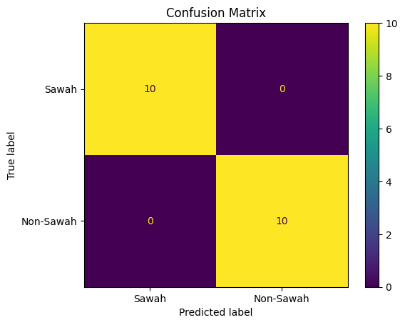
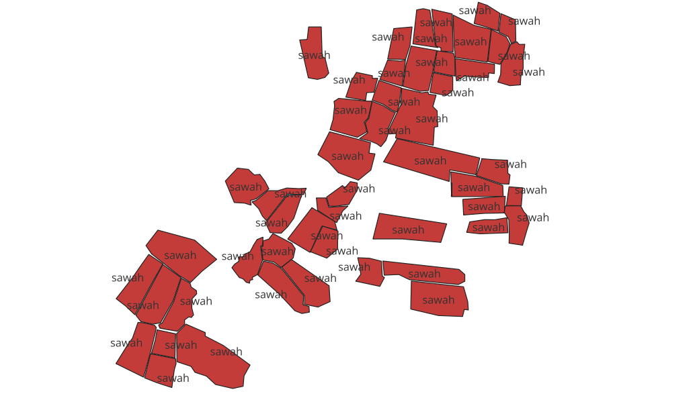
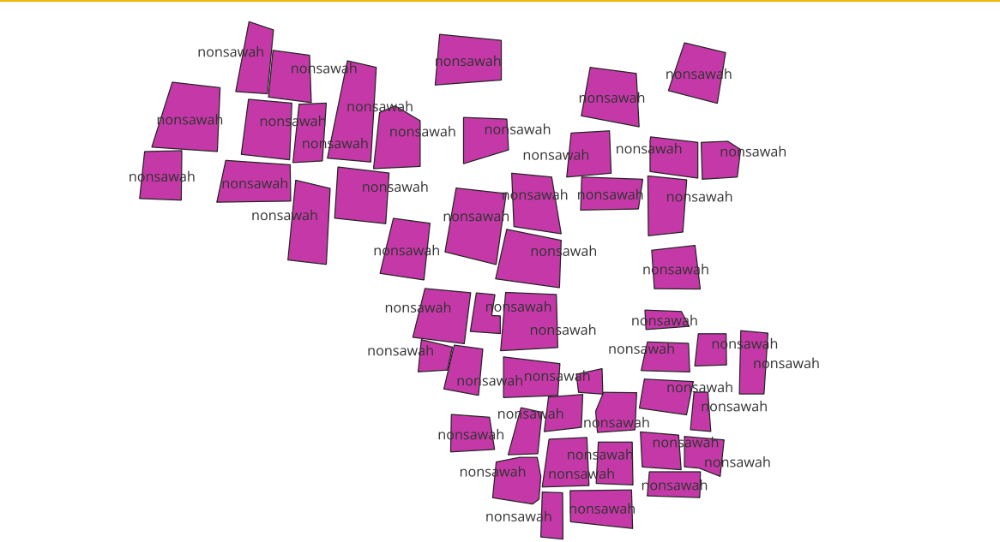
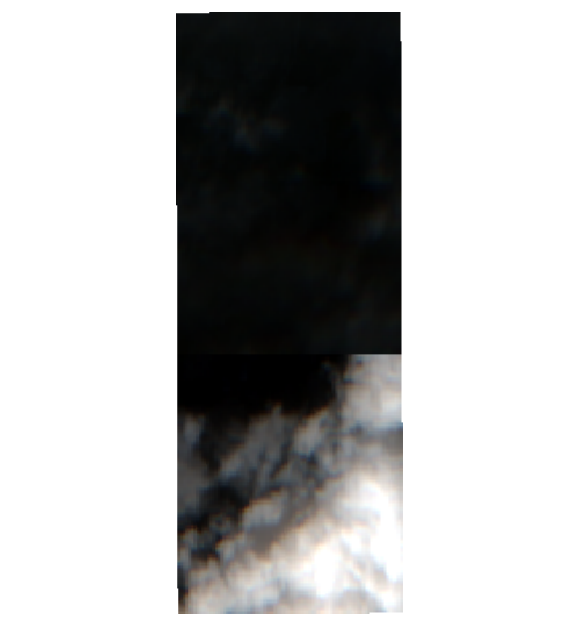
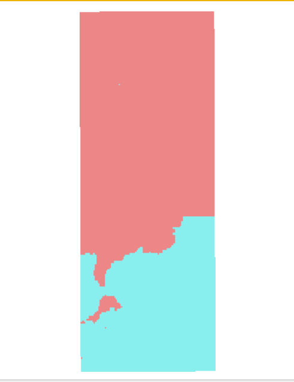
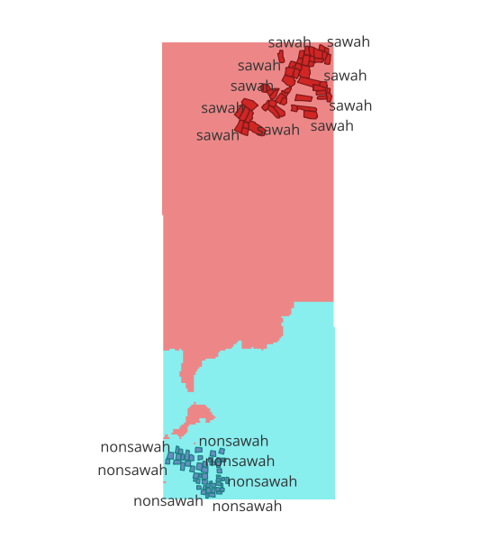

Klasifikasi Lahan Sawah dan Non-Sawah menggunakan Sentinel-2A dan Random Forest#
Pemanfaatan citra Sentinel-2A dapat digunakan untuk mengidentifikasi tutupan lahan berdasarkan karakteristik spektralnya, termasuk membedakan wilayah sawah dan non-sawah. Penelitian ini menggunakan 100 sampel, terdiri dari 50 sampel sawah dan 50 sampel non-sawah. Data Sentinel-2A Level-2A menggunakan band B02, B03, B04, B08, dan B11, serta fitur tambahan berupa NDVI dan NDWI. Seluruh fitur digunakan untuk membangun model klasifikasi Random Forest, kemudian hasilnya divisualisasikan menggunakan QGIS.
Data |
Keterangan |
|---|---|
Sentinel-2A |
Level-2A |
B02 |
Blue |
B03 |
Green |
B04 |
Red |
B08 |
Near Infrared (NIR) |
B11 |
Short Wave Infrared (SWIR) |
Sampel Sawah |
50 sampel |
Sampel Non-Sawah |
50 sampel |
1. Menyiapkan dan Menggabungkan Data Sampel#
Membaca data spasial sampel sawah dan non-sawah dalam format Shapefile (.shp). Masing-masing data kemudian diberi label agar dapat digunakan sebagai data klasifikasi.
Data sawah diberi label sawah, sedangkan data non-sawah diberi label non_sawah. Setelah itu kedua data digabungkan menjadi satu GeoDataFrame.
import geopandas as gpd
import pandas as pd
sawah = gpd.read_file("materi/Sampel Sawah/input.shp")
nonsawah = gpd.read_file("materi/Sampel Non-Sawah/input.shp")
sawah["label"] = "sawah"
nonsawah["label"] = "non_sawah"
sampel = gpd.GeoDataFrame(
pd.concat([sawah, nonsawah], ignore_index=True),
crs=sawah.crs
)
print("Jumlah sampel:", len(sampel))
print(sampel["label"].value_counts())
Jumlah sampel: 100
label
sawah 50
non_sawah 50
Name: count, dtype: int64
2. Menentukan Batas Wilayah Sampel#
Mengubah sistem koordinat sampel menjadi EPSG:4326, yaitu sistem koordinat geografis berbasis lintang dan bujur.
Kemudian total_bounds digunakan untuk mendapatkan batas wilayah yang mencakup seluruh sampel.
Menunjukkan batas geografis wilayah penelitian:
West = 112.1881514
East = 112.1955727
South = -7.2227551
North = -7.2025308
Batas tersebut nantinya digunakan untuk mengambil citra Sentinel-2A pada wilayah yang sesuai dengan lokasi sampel
sampel_wgs84 = sampel.to_crs("EPSG:4326")
minx, miny, maxx, maxy = sampel_wgs84.total_bounds
spatial_extent = {
"west": float(minx),
"south": float(miny),
"east": float(maxx),
"north": float(maxy)
}
print(spatial_extent)
{'west': 112.1881514, 'south': -7.2227551, 'east': 112.1955727, 'north': -7.2025308}
3. Menghubungkan ke OpenEO Copernicus#
membuat koneksi ke OpenEO Copernicus Data Space. Platform ini digunakan untuk mengakses data penginderaan jauh, termasuk citra Sentinel-2.
authenticate_oidc() digunakan untuk melakukan autentikasi agar notebook dapat mengakses data.
import openeo
conn = openeo.connect(
"https://openeo.dataspace.copernicus.eu"
)
conn.authenticate_oidc()
Authenticated using refresh token.
<Connection to 'https://openeo.dataspace.copernicus.eu/openeo/1.2/' with OidcBearerAuth>
4. Mengambil Data Sentinel-2A#
Mmengambil koleksi data Sentinel-2 Level-2A berdasarkan:
Wilayah penelitian
Periode waktu 31 Agustus 2025 sampai 31 Agustus 2026
Band B02, B03, B04, B08, dan B11
Kelima band tersebut digunakan sebagai fitur spektral dalam klasifikasi.
datacube = conn.load_collection(
"SENTINEL2_L2A",
spatial_extent=spatial_extent,
temporal_extent=[
"2025-08-31",
"2026-08-31"
],
bands=[
"B02",
"B03",
"B04",
"B08",
"B11"
]
)
print("Datacube berhasil dibuat")
Datacube berhasil dibuat
5. Menyimpan Citra Sentinel-2 sebagai TIF#
Data Sentinel-2 yang telah diambil kemudian diunduh dan disimpan dalam format GeoTIFF, yang nantinya digunakan untuk mengambil nilai spektral dan melakukan klasifikasi.
output_path = "materi/Sentinel2_kedungpring_sampel.tif"
datacube.download(
output_path,
format="GTiff"
)
print("TIF berhasil disimpan:", output_path)
TIF berhasil disimpan: materi/Sentinel2_kedungpring_sampel.tif
# Memeriksa Informasi Raster
import rasterio
with rasterio.open(output_path) as src:
print("Jumlah band:", src.count)
print("Nama band:", src.descriptions)
print("CRS:", src.crs)
print("Batas raster:", src.bounds)
Jumlah band: 5
Nama band: ('B02', 'B03', 'B04', 'B08', 'B11')
CRS: EPSG:32749
Batas raster: BoundingBox(left=631170.0, bottom=9201450.0, right=632010.0, top=9203700.0)
# Memeriksa NoData
import rasterio
tif_path = "materi/Sentinel2_kedungpring_sampel.tif"
src = rasterio.open(tif_path)
print("Band:", src.descriptions)
print("CRS:", src.crs)
print("NoData:", src.nodata)
Band: ('B02', 'B03', 'B04', 'B08', 'B11')
CRS: EPSG:32749
NoData: -32768.0
Note : Nilai -32768 merupakan nilai khusus yang digunakan untuk menunjukkan bahwa suatu piksel tidak memiliki data yang valid.
Nilai ini nantinya tidak akan digunakan dalam perhitungan nilai rata-rata band.
6. Menyamakan Sistem Koordinat Sampel dan Raster#
Sampel dikonversi ke CRS yang sama dengan raster, yaitu EPSG:32749.
Hal ini penting supaya lokasi sampel tepat ketika digunakan untuk mengambil nilai piksel dari citra Sentinel-2.
sampel = sampel.to_crs(src.crs)
print("CRS sampel:", sampel.crs)
print("CRS raster:", src.crs)
CRS sampel: PROJCS["WGS 84 / UTM zone 49S",GEOGCS["WGS 84",DATUM["WGS_1984",SPHEROID["WGS 84",6378137,298.257223563,AUTHORITY["EPSG","7030"]],AUTHORITY["EPSG","6326"]],PRIMEM["Greenwich",0,AUTHORITY["EPSG","8901"]],UNIT["degree",0.0174532925199433,AUTHORITY["EPSG","9122"]],AUTHORITY["EPSG","4326"]],PROJECTION["Transverse_Mercator"],PARAMETER["latitude_of_origin",0],PARAMETER["central_meridian",111],PARAMETER["scale_factor",0.9996],PARAMETER["false_easting",500000],PARAMETER["false_northing",10000000],UNIT["metre",1,AUTHORITY["EPSG","9001"]],AXIS["Easting",EAST],AXIS["Northing",NORTH],AUTHORITY["EPSG","32749"]]
CRS raster: EPSG:32749
7. Mengambil Nilai Band pada Setiap Sampel#
Melakukan perulangan terhadap seluruh sampel.
Setiap geometri sampel digunakan untuk mengambil bagian citra Sentinel-2 yang berada di dalam wilayah sampel.
Kemudian nilai piksel dari setiap band dihitung rata-ratanya.
from rasterio.mask import mask
import numpy as np
hasil = []
for idx, row in sampel.iterrows():
data, transform = mask(
src,
[row.geometry],
crop=True
)
nilai = {
"FID": idx,
"label": row["label"]
}
for i, band_name in enumerate(src.descriptions):
band = data[i]
# Hilangkan nilai NoData
valid = band[
(band != src.nodata) &
np.isfinite(band)
]
if len(valid) > 0:
nilai[band_name] = float(np.mean(valid))
else:
nilai[band_name] = np.nan
hasil.append(nilai)
df = pd.DataFrame(hasil)
8. 5 Sampel Sawah dan Non-Sawah#
Nilai spektral sampel sawah dan non-sawah memiliki perbedaan. Perbedaan karakteristik spektral inilah yang kemudian dimanfaatkan oleh Random Forest untuk melakukan klasifikasi.
band_cols = ["FID", "label", "B02", "B03", "B04", "B08", "B11"]
hasil_sawah = df[df["label"] == "sawah"].head(5)
hasil_nonsawah = df[df["label"] == "non_sawah"].head(5)
print("===== 5 SAMPEL SAWAH PERTAMA =====")
display(hasil_sawah[band_cols])
print("\n===== 5 SAMPEL NON-SAWAH PERTAMA =====")
display(hasil_nonsawah[band_cols])
===== 5 SAMPEL SAWAH PERTAMA =====
| FID | label | B02 | B03 | B04 | B08 | B11 | |
|---|---|---|---|---|---|---|---|
| 0 | 0 | sawah | 1134.250000 | 1273.125000 | 1235.875000 | 1902.125000 | 1286.187500 |
| 1 | 1 | sawah | 1099.250000 | 1250.750000 | 1172.250000 | 1928.250000 | 1269.500000 |
| 2 | 2 | sawah | 1140.000000 | 1300.666667 | 1283.333333 | 1980.666667 | 1546.333333 |
| 3 | 3 | sawah | 1156.888889 | 1302.000000 | 1236.888889 | 2004.222222 | 1487.555556 |
| 4 | 4 | sawah | 1179.272727 | 1310.272727 | 1228.272727 | 1989.545455 | 1288.136364 |
===== 5 SAMPEL NON-SAWAH PERTAMA =====
| FID | label | B02 | B03 | B04 | B08 | B11 | |
|---|---|---|---|---|---|---|---|
| 50 | 50 | non_sawah | 7890.222222 | 7161.777778 | 6484.888889 | 6538.222222 | 4916.444444 |
| 51 | 51 | non_sawah | 4601.000000 | 4872.000000 | 4908.000000 | 4565.000000 | 4317.750000 |
| 52 | 52 | non_sawah | 3562.000000 | 3526.666667 | 3584.000000 | 3642.666667 | 3541.000000 |
| 53 | 53 | non_sawah | 5320.800000 | 4201.600000 | 3488.800000 | 4416.800000 | 3384.200000 |
| 54 | 54 | non_sawah | 4952.000000 | 3776.000000 | 3071.333333 | 4157.333333 | 2774.666667 |
# Mengecek Jumlah Data dan Missing Value
print(df["label"].value_counts())
print(df[["B02", "B03", "B04", "B08", "B11"]].isna().sum())
label
sawah 50
non_sawah 50
Name: count, dtype: int64
B02 0
B03 0
B04 0
B08 0
B11 0
dtype: int64
9. Menghitung NDVI dan NDWI#
NDVI digunakan sebagai fitur tambahan yang menggambarkan karakteristik vegetasi.
NDWI digunakan sebagai fitur tambahan yang berkaitan dengan karakteristik air/kelembapan permukaan.
Nilai NDVI pada beberapa sampel sawah terlihat lebih tinggi dibandingkan sampel non-sawah. Hal tersebut membantu model membedakan karakteristik vegetasi sawah dengan objek non-sawah.
df["NDVI"] = (
(df["B08"] - df["B04"]) /
(df["B08"] + df["B04"])
)
df["NDWI"] = (
(df["B03"] - df["B08"]) /
(df["B03"] + df["B08"])
)
kolom = [
"FID",
"label",
"B02",
"B03",
"B04",
"B08",
"B11",
"NDVI",
"NDWI"
]
# 5 Sawah pertama
sawah_5 = df[df["label"] == "sawah"].head(5)
# 5 Non-Sawah pertama
nonsawah_5 = df[df["label"] == "non_sawah"].head(5)
print("===== 5 SAMPEL SAWAH PERTAMA =====")
display(sawah_5[kolom])
print("\n===== 5 SAMPEL NON-SAWAH PERTAMA =====")
display(nonsawah_5[kolom])
===== 5 SAMPEL SAWAH PERTAMA =====
| FID | label | B02 | B03 | B04 | B08 | B11 | NDVI | NDWI | |
|---|---|---|---|---|---|---|---|---|---|
| 0 | 0 | sawah | 1134.250000 | 1273.125000 | 1235.875000 | 1902.125000 | 1286.187500 | 0.212317 | -0.198095 |
| 1 | 1 | sawah | 1099.250000 | 1250.750000 | 1172.250000 | 1928.250000 | 1269.500000 | 0.243832 | -0.213117 |
| 2 | 2 | sawah | 1140.000000 | 1300.666667 | 1283.333333 | 1980.666667 | 1546.333333 | 0.213644 | -0.207233 |
| 3 | 3 | sawah | 1156.888889 | 1302.000000 | 1236.888889 | 2004.222222 | 1487.555556 | 0.236750 | -0.212394 |
| 4 | 4 | sawah | 1179.272727 | 1310.272727 | 1228.272727 | 1989.545455 | 1288.136364 | 0.236580 | -0.205852 |
===== 5 SAMPEL NON-SAWAH PERTAMA =====
| FID | label | B02 | B03 | B04 | B08 | B11 | NDVI | NDWI | |
|---|---|---|---|---|---|---|---|---|---|
| 50 | 50 | non_sawah | 7890.222222 | 7161.777778 | 6484.888889 | 6538.222222 | 4916.444444 | 0.004095 | 0.045515 |
| 51 | 51 | non_sawah | 4601.000000 | 4872.000000 | 4908.000000 | 4565.000000 | 4317.750000 | -0.036208 | 0.032532 |
| 52 | 52 | non_sawah | 3562.000000 | 3526.666667 | 3584.000000 | 3642.666667 | 3541.000000 | 0.008118 | -0.016180 |
| 53 | 53 | non_sawah | 5320.800000 | 4201.600000 | 3488.800000 | 4416.800000 | 3384.200000 | 0.117385 | -0.024970 |
| 54 | 54 | non_sawah | 4952.000000 | 3776.000000 | 3071.333333 | 4157.333333 | 2774.666667 | 0.150235 | -0.048067 |
10. Menentukan Fitur dan Target#
Variabel X berisi 7 fitur yang digunakan sebagai input model, Sedangkan y berisi target klasifikasi.
fitur = [
"B02",
"B03",
"B04",
"B08",
"B11",
"NDVI",
"NDWI"
]
X = df[fitur]
y = df["label"]
11. Membagi Data Training dan Testing#
membuat model klasifikasi menggunakan Random Forest.
Parameter:
n_estimators=100 → menggunakan 100 decision tree.
random_state=42 → membuat hasil yang dapat direproduksi.
melatih model menggunakan 80 data training, Model yang sudah dilatih digunakan untuk memprediksi kelas dari 20 data testing.
from sklearn.model_selection import train_test_split
X_train, X_test, y_train, y_test = train_test_split(
X,
y,
test_size=0.2,
random_state=42,
stratify=y
)
print("Data training:", len(X_train))
print("Data testing :", len(X_test))
Data training: 80
Data testing : 20
from sklearn.ensemble import RandomForestClassifier
model = RandomForestClassifier(
n_estimators=100,
random_state=42
)
model.fit(X_train, y_train)
print("Model berhasil dilatih!")
Model berhasil dilatih!
y_pred = model.predict(X_test)
12. Menghitung Akurasi#
Akurasi model dihitung menggunakan fungsi accuracy_score() dengan membandingkan label aktual pada data testing (y_test) dengan hasil prediksi Random Forest (y_pred). Dari 20 data testing, seluruh data berhasil diklasifikasikan dengan benar, sehingga diperoleh 20 prediksi benar dan 0 prediksi salah. Berdasarkan perhitungan (20/20 = 1.0), diperoleh akurasi sebesar 100%. Hasil tersebut menunjukkan bahwa pada data testing yang digunakan, model Random Forest mampu membedakan kelas sawah dan non-sawah dengan tepat.
from sklearn.metrics import accuracy_score
akurasi = accuracy_score(y_test, y_pred)
print("Akurasi:", akurasi)
Akurasi: 1.0
13. Classification Report#
Metrik |
Hasil |
Arti |
|---|---|---|
Precision |
1.00 |
Prediksi setiap kelas yang dihasilkan model semuanya benar |
Recall |
1.00 |
Seluruh data dari masing-masing kelas berhasil dikenali |
F1-score |
1.00 |
Keseimbangan precision dan recall sangat baik |
Accuracy |
1.00 |
100% data testing diklasifikasikan dengan benar |
from sklearn.metrics import classification_report
print(
classification_report(
y_test,
y_pred
)
)
precision recall f1-score support
non_sawah 1.00 1.00 1.00 10
sawah 1.00 1.00 1.00 10
accuracy 1.00 20
macro avg 1.00 1.00 1.00 20
weighted avg 1.00 1.00 1.00 20
14. Confusion Matrix#
akurasi mencapai 100%, confusion matrix menunjukkan bahwa:
Data sawah diprediksi sebagai sawah.
Data non-sawah diprediksi sebagai non-sawah.
Tidak terdapat kesalahan klasifikasi.
Aktual |
Prediksi Sawah |
Prediksi No-Sawah |
|---|---|---|
Sawah |
10 |
0 |
Non-Sawah |
0 |
10 |
Jadi tidak terdapat False Positive maupun False Negative pada data testing.
from sklearn.metrics import confusion_matrix, ConfusionMatrixDisplay
import matplotlib.pyplot as plt
cm = confusion_matrix(
y_test,
y_pred,
labels=["sawah", "non_sawah"]
)
disp = ConfusionMatrixDisplay(
confusion_matrix=cm,
display_labels=["Sawah", "Non-Sawah"]
)
disp.plot()
plt.title("Confusion Matrix")
plt.show()

# Menyimpan Dataset
df.to_csv(
"materi/dataset_sawah_nonsawah.csv",
index=False
)
print("Dataset tersimpan.")
Dataset tersimpan.
15. Membaca Rester untuk Klasifikasi Seluruh Wilayah#
Membaca citra raster Sentinel-2A secara keseluruhan, bukan hanya pada lokasi sampel. Raster yang digunakan memiliki ukuran 84 × 225 piksel, sehingga terdapat 18.900 piksel yang akan diklasifikasikan.
import rasterio
tif_path = "materi/Sentinel2_kedungpring_sampel.tif"
src = rasterio.open(tif_path)
print("Band:", src.descriptions)
print("Ukuran:", src.width, "x", src.height)
print("CRS:", src.crs)
Band: ('B02', 'B03', 'B04', 'B08', 'B11')
Ukuran: 84 x 225
CRS: EPSG:32749
16. Mengubah Rester menjadi Data Pixel#
5 = jumlah band
225 = tinggi raster
84 = lebar raster
Terdapat 18.900 piksel yang akan diklasifikasikan
import numpy as np
data = src.read()
print("Shape:", data.shape)
Shape: (5, 225, 84)
bands, height, width = data.shape
pixels = data.reshape(bands, -1).T
print("Jumlah piksel:", pixels.shape[0])
Jumlah piksel: 18900
B02 = pixels[:, 0]
B03 = pixels[:, 1]
B04 = pixels[:, 2]
B08 = pixels[:, 3]
B11 = pixels[:, 4]
NDVI = (B08 - B04) / (B08 + B04 + 1e-10)
NDWI = (B03 - B08) / (B03 + B08 + 1e-10)
X_raster = np.column_stack([
B02,
B03,
B04,
B08,
B11,
NDVI,
NDWI
])
print(X_raster.shape)
(18900, 7)
# Mengecek Pixel Valid
nodata = src.nodata
valid_mask = np.all(
pixels != nodata,
axis=1
)
print("Total piksel :", len(pixels))
print("Piksel valid :", valid_mask.sum())
print("Piksel NoData:", (~valid_mask).sum())
Total piksel : 18900
Piksel valid : 18900
Piksel NoData: 0
18. Melakukan Klasifikasi Seluruh Pixel#
Menggunakan model Random Forest yang sebelumnya sudah dilatih untuk memprediksi seluruh piksel raster.
Dari 18.900 piksel:
12.445 piksel diklasifikasikan sebagai sawah.
6.455 piksel diklasifikasikan sebagai non-sawah.
Jika dihitung persentasenya:
Sawah ≈ 65,85%
Non-sawah ≈ 34,15%
Jadi wilayah raster yang diproses didominasi oleh kelas sawah.
prediksi = np.full(
len(pixels),
"",
dtype="<U20"
)
prediksi[valid_mask] = model.predict(
X_raster[valid_mask]
)
print("Hasil prediksi:")
print(np.unique(prediksi, return_counts=True))
c:\Users\PC\AppData\Local\Programs\Python\Python39\lib\site-packages\sklearn\utils\validation.py:2739: UserWarning: X does not have valid feature names, but RandomForestClassifier was fitted with feature names
warnings.warn(
Hasil prediksi:
(array(['non_sawah', 'sawah'], dtype='<U20'), array([ 6455, 12445]))
19. Mengubah Label Menjadi Nilai Kelas#
Kelas dibuat menjadi :
0 = NoData
1 = Sawah
2 = Non-Sawah
hasil_kelas = np.zeros(
len(pixels),
dtype=np.uint8
)
hasil_kelas[
valid_mask & (prediksi == "sawah")
] = 1
hasil_kelas[
valid_mask & (prediksi == "non_sawah")
] = 2
print("Jumlah Sawah:", np.sum(hasil_kelas == 1))
print("Jumlah Non-Sawah:", np.sum(hasil_kelas == 2))
print("Jumlah NoData:", np.sum(hasil_kelas == 0))
Jumlah Sawah: 12445
Jumlah Non-Sawah: 6455
Jumlah NoData: 0
# Menyimpan hasil klasifikasi
output_class = "materi/hasil_klasifikasi_sawah.tif"
profile = src.profile.copy()
profile.update(
dtype=rasterio.uint8,
count=1,
nodata=0
)
with rasterio.open(
output_class,
"w",
**profile
) as dst:
dst.write(hasil_kelas.reshape(height, width), 1)
print("Berhasil disimpan:")
print(output_class)
Berhasil disimpan:
materi/hasil_klasifikasi_sawah.tif
20. Hasil Implementasi Citra di QGIS#
Citra Sampel Sawah

Citra Sampel Non-Sawah

Citra Sentinel2

Citra hasil klasifikasi

